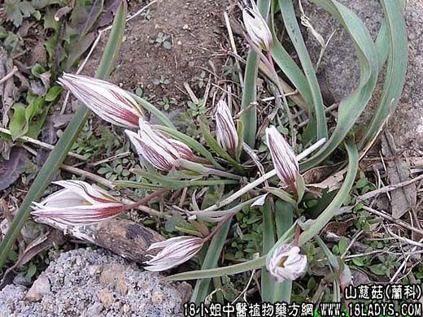

【中药概述】
山慈菇为兰科草本植物杜鹃兰的假鳞茎。辛、寒；有小毒。归肝、胃经。
1．清热解毒：用于疔疮肿毒，喉痹肿痛，红肿热痛，配蒲公英，紫花地丁，赤芍，丹皮等同用，亦可捣烂外敷；蛇虫咬伤，狂犬咬伤等症，如<紫金锭>、（片玉新书<玉枢丹>）。
2．消痈散结：用于瘰疬结核，慢性淋巴结炎，配夏枯草，元参，生牡蛎，浙贝母。
3．肿瘤：用于多种恶性肿瘤，如食道癌、淋巴癌、乳腺癌、宫颈癌、鼻咽癌、肺癌等。配白花蛇舌草，半枝莲，山豆根等药。
【药效鉴别】
本品虽为清热解毒药，但临床少用于五脏热毒之证，多用于治疗外科疮疡、瘰疬结核及肿瘤。
【化学成分】
含秋水仙碱、异秋水仙碱、角秋水仙碱等多种生物碱。
【用量用法】
本品5——12g，水煎服，或入剂。外用适量。
【使用注意】
非痈毒肿痛者忌用。不良反应见恶心，呕吐，腹痛，腹泻、全身不适等。